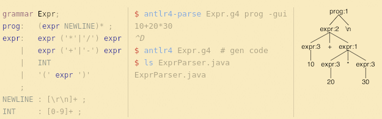

alJabr: An example interpreter project using Maven and ANTLR
Table of Contents
- Introduction
- Maven Quickstart
- Boolean expressions
- ANTLR quickstart
- Specifying our boolean language
- Integrating with Maven
- Representing expressions
- Translating between ANTLR and our internal representation
- Testing the parsing machinery
- Creating the REPL
- Implementing our boolean reducer
- Modify the REPL to use the new reducer
- Future work and extensions
In this post, we build an interpreter over boolean expressions using ANTLR and
Maven. The code for the project is hosted on GitHub, released under the GPL
version 3.0 license. While the project contains a manifest.scm file to create
a development environment via Guix, this post assumes you know how to install
various necessary software dependencies and tools for your choice operating
system.
Introduction
Often in software projects, a common problem involves parsing and processing different input files or formats to accomplish different tasks. Many software developers, for a myriad of reasons implement custom, hand crafted parsers for these problems. In this post, we demonstrate a different approach for creating parsing machinery for a small invented language over boolean expressions. Specifically, we'll use "ANother Tool for Language Recognition" (ANTLR) to generate all the parsing machinery for us. We add a few additional pieces, specifically a visitor, to translate the models from ANTLR into our own representation. Finally, we implement a processor that reduces our boolean expressions down to a single boolean value. We close with some interesting extensions or exercises to extend the interpreter into a, perhaps, more useful tool.
Maven Quickstart
We begin with a new Java project. Maven is an established and venerable tool for working with Java or JVM hosted projects. We opt for choosing a tool like Maven because it captures the steps for building our project declaratively within its "Project Object Model" or POM, and we can use that anywhere we have an appropriate version of Java and Maven. For example, the final source code uses Maven within GitHub Actions, a continuous integration environment hosted and available on GitHub, to build and test the project.
Maven can generate the initial project structure using the following command:
mvn archetype:generate \ -DgroupId=dev.fmsea.aljabr \ -DartifactId=alJabr \ -DarchetypeArtifactId=maven-archetype-quickstart \ -DarchetypeVersion=1.5 \ -DinteractiveMode=false
This generates the following directory structure:
aljabr
|-- pom.xml
`-- src
|-- main
| `-- java
| `-- dev
| `-- fmsea
| `-- aljabr
| `-- App.java
`-- test
`-- java
`-- dev
`-- fmsea
`-- aljabr
`-- AppTest.java
The main subtree contains our project code, and the test subtree contains our,
unimaginatively named, test code.
As a result of our newly generated project, we should be able to compile and test this code using the following Maven command:
mvn test
Maven phases and build lifecycles
Unlike tools like Ant or Make, Maven comes with a predefined set of phases or "targets" to use the former parlance. These phases help construct a project from dependency resolution, classpath modification, and the necessary flags to compile, test, package, and install or deploy the project. Here is a short list of standard phases:
validatecompiletestpackageverifyinstalldeploy
See the documentation to learn more about Maven Lifecycles.
POM Changes
While the above command does indeed generate a lot of the necessary pom.xml
file, there are a few changes that may be necessary to make the project work.
Specifically, the archetype generates a POM with build -> pluginManagement.
This may be a misunderstanding on my part, but in my experience, I need to lift
the plugins under pluginManagement to have everything work as desired.
Afterwards, I remove the now empty pluginManagement portion of the file.
Boolean expressions
The language we use for this demonstration is simply the boolean expressions we are used to within most programming languages. We have logical or, disjunctions; logical and, conjunctions, and logical negation. The truth tables for each are given below.
| A | \(\lnot A\) |
|---|---|
| T | F |
| F | T |
| A | B | \(A \lor B\) |
| T | T | T |
| T | F | T |
| F | T | T |
| F | F | F |
| A | B | \(A \land B\) |
| T | T | T |
| T | F | F |
| F | T | F |
| F | F | F |
While it may seem pedantic to list these out, we want to be sure of their values as we implement our "interperter" over these values. Moreover, depending on how far we take these ideas, we may want to demonstrate and add additional operators, e.g., inference, distribution, equality tests between expressions, etc. This is all great, but we need to define our actual language.
ANTLR quickstart
As mentioned in the introduction, ANTLR is a parser generator which we can use to build the machinery for parsing our boolean expression language and creating the initial steps of our interpreter. ANTLR uses a BNF-like syntax to specify our input language, which ANTLR consumes to generate the parser and its representation of our language. The following image is an example from the ANTLR website:

A full introduction to BNF and language grammars is out of scope for this post.
Specifying our boolean language
Before we can construct even a handcrafted parser, we need to know what our language looks like. Since our initial language goals are pretty straightforward, let's simply define a few typical expressions our language should contain:
At the bare minimum, we need a way to express literal boolean values, true, and
false. For literals, we could simply use 0 and 1, or f and t, or an uppercase
alternative. However, to both demonstrate the capabilities of ANTLR and since
we may want to extend our language to support variable binding, for this
language we opt for the unconventional choice of #f and #t to represent false
and true, respectively.
Next, we need to decide on our representation of logical negation. For this,
we shall use a simple not which accepts a single operand.
Similarly, we need to decide on our representation of connectives. While it
would be fun to use the literal UTF-8 characters mathematical symbols for
conjunctions and disjunctions, e.g., ∧ and ∨, these characters are a little
painful to type. Therefore, we choose a more friendly syntax: and and or.
Both of these operators are binary connectives which only take two operands
each.
Finally, we need to sort out the "tightness" or the precedence of the operators. While I am certainly inclined to just make it a LISP and not worry about it, we shall not do that in this case.
Typically, we have the following for the preorder of operator precedence: \(\text{not} \sqsupset \text{and} \sqsupset \text{or}\). That is, our negation operator has the highest precedence, conjunction medium precedence, and disjunctions have the lowest. We shall continue with this typical ordering.
As an exercise, modify the grammar to flip the ordering of precedence.
Therefore, the grammar for our language looks something like the following:
bterm : '#f' | '#t' bexpr : 'not' bexpr | bexpr 'and' bexpr | bexpr 'or' bexpr | bterm
We can translate this into ANTLR's syntax:
grammar BoolExpr; WS : [ \t\n]+ -> skip ; NotOp : 'not' ; AndOp : 'and' ; OrOp : 'or' ; BoolTerm : '#f' | '#t' ; bexpr : NotOp bexpr # Negation | bexpr AndOp bexpr # AndExpr | bexpr OrOp bexpr # OrExpr | BoolTerm # BoolTerm ; expr : bexpr* EOF ;
The first line provides a name for the root of the language expressions. The
next rule provides a "skip" rule for different whitespace characters that do
not contribute to our language. The next three rules describe the different
operators. The next rule describes our literal boolean terms. The bexpr rule
provides the production rules for each of the types of expressions our
interpreter parses. Moreover, the "# Negation" bits at the end "name" the
production rule; we use these later when creating our representation of the
language. Finally, the expr rule provides a "root" rule we use to ensure ANTLR
handles the end of input gracefully. Notice, we are currently only interested
in the bexpr productions.
Add the contents of the grammar to the following file within the root of the
project: src/main/antlr4/dev/fmsea/aljabr/BoolExpr.g4.
Integrating with Maven
We need to add a few dependencies to our project so that we can compile against the generated ANTLR code:
<dependency> <groupId>org.antlr</groupId> <artifactId>antlr4</artifactId> <version>4.13.2</version> </dependency> <dependency> <groupId>org.antlr</groupId> <artifactId>antlr4-runtime</artifactId> <version>4.13.2</version> </dependency>
To wire in the process of generating Java code from the ANTLR grammar and add
the generated code to our compilation targets, we need to add some plugins to
the pom.xml file of our project. Specifically, we need the following plugin in
the build -> plugins portion of the pom.xml:
<plugin> <groupId>org.codehaus.mojo</groupId> <artifactId>build-helper-maven-plugin</artifactId> <version>1.7</version> <executions> <execution> <id>add-source</id> <phase>generate-sources</phase> <goals> <goal>add-source</goal> </goals> <configuration> <sources> <source>src/main/java</source> </sources> </configuration> </execution> </executions> </plugin>
This plugin adds generated sources into our compilation target tree. Next, we
need the ANTLR plugin for generating the parsing machinery. Add the following
plugin to the same section of the pom.xml:
<plugin> <groupId>org.antlr</groupId> <artifactId>antlr4-maven-plugin</artifactId> <version>4.13.2</version> <configuration> <visitor>true</visitor> <listener>true</listener> </configuration> <executions> <execution> <goals> <goal>antlr4</goal> </goals> </execution> </executions> </plugin>
With these changes, we should be able to test our compilation process.
mvn clean compile
Notice, that in the compilation process, Maven comments about compiling seven
source files, while our project only actually has one. If this is not the
case, stop here and make sure the process is working. The additional six
source files should be found in the following folder after compilation:
target/generated-sources/antlr4/dev/fmsea/aljabr/.
Representing expressions
While we could directly use ANTLR's representation for our objects, it is often better to create our own internal representation.
We start with the abstract base class that is essentially the representation of the final rule which represents the "root" of all expressions.
package dev.fmsea.aljabr; public abstract class BoolExpr { public interface Visitor<R> { } public abstract <R> R accept(Visitor<R> visitor); }
The first thing we add is an empty Visitor interface which is used for processing expressions; we shall add to it later.
Let's create an initial visitor which translates expressions back into their
string representation. Under a new package called visitors, create the
following class:
package dev.fmsea.aljabr.visitors; import dev.fmsea.aljabr.BoolExpr; public class StringReprVisitor implements BoolExpr.Visitor<String> { }
Now, we can add an override method for toString in our BoolExpr:
@Override public String toString() { return this.accept(new StringReprVisitor()); }
Now, we need to create representations for each of our different major
expression types, Negation, AndExpr, OrExpr, and our literal values.
package dev.fmsea.aljabr; public class NegationExpr extends BoolExpr { public final BoolExpr inner; public NegationExpr(BoolExpr inner) { this.inner = inner; } public <R> R accept(BoolExpr.Visitor<R> visitor) { return visitor.visitNegation(this); } }
package dev.fmsea.aljabr; public class AndExpr extends BoolExpr { public final BoolExpr left; public final BoolExpr right; public AndExpr(BoolExpr left, BoolExpr right) { this.left = left; this.right = right; } public <R> R accept(BoolExpr.Visitor<R> visitor) { return visitor.visitAnd(this); } }
package dev.fmsea.aljabr; public class OrExpr extends BoolExpr { public final BoolExpr left; public final BoolExpr right; public OrExpr(BoolExpr left, BoolExpr right) { this.left = left; this.right = right; } public <R> R accept(BoolExpr.Visitor<R> visitor) { return visitor.visitOr(this); } }
package dev.fmsea.aljabr; public abstract class BoolTerm extends BoolExpr { public final boolean value; public BoolTerm(boolean value) { this.value = value; } }
package dev.fmsea.aljabr; public class FalseValue extends BoolTerm { public FalseValue() { super(false); } public <R> R accept(BoolExpr.Visitor<R> visitor) { return visitor.visitFalse(this); } }
package dev.fmsea.aljabr; public class TrueValue extends BoolTerm { public TrueValue() { super(true); } public <R> R accept(BoolExpr.Visitor<R> visitor) { return visitor.visitTrue(this); } }
Now that we have some elements of our tree, we must update the visitor
interface and our string representation visitor to ensure everything is
implemented. Add the following signatures to the visitor interface of the
BoolExpr class.
public interface Visitor<R> { R visitTrue(TrueValue trueValue); R visitFalse(FalseValue falseValue); R visitNegation(NegationExpr negation); R visitAnd(AndExpr and); R visitOr(OrExpr or); }
Now, modify the StringReprVisitor to implement each of these methods.
package dev.fmsea.aljabr.visitors; import dev.fmsea.aljabr.AndExpr; import dev.fmsea.aljabr.BoolExpr; import dev.fmsea.aljabr.FalseValue; import dev.fmsea.aljabr.NegationExpr; import dev.fmsea.aljabr.OrExpr; import dev.fmsea.aljabr.TrueValue; public class StringReprVisitor implements BoolExpr.Visitor<String> { public String visitTrue(TrueValue trueValue) { return "#t"; } public String visitFalse(FalseValue falseValue) { return "#f"; } public String visitNegation(NegationExpr negation) { return String.format("not %s", negation.inner.accept(this)); } public String visitAnd(AndExpr and) { return String.format("%s and %s", and.left.accept(this), and.right.accept(this)); } public String visitOr(OrExpr or) { return String.format("%s or %s", or.left.accept(this), or.right.accept(this)); } }
Finally, personally, I like to add some convenience methods to the BoolExpr
class to make constructing new expressions easier. Add the following to the
BoolExpr class:
public static TrueValue newTrue() { return new TrueValue(); } public static FalseValue newFalse() { return new FalseValue(); } public static NegationExpr newNegation(BoolExpr inner) { return new NegationExpr(inner); } public static AndExpr newAnd(BoolExpr left, BoolExpr right) { return new AndExpr(left, right); } public static OrExpr newOr(BoolExpr left, BoolExpr right) { return new OrExpr(left, right); }
Translating between ANTLR and our internal representation
Now that we have our own internal representation for our boolean expressions, we need to implement a translator that rewrites terms in the ANTLR representation into our internal representation. Fortunately, this is quite straightforward using the generated visitors from ANTLR.
Let's create a new class called BoolExprInstantiator; it extends the generated
base visitor, and it returns BoolExpr's. The names of methods available within
the ctx parameter are derived from the grammar and the type of the token. If
in doubt, refer to the inner classes of the generated parser object.
package dev.fmsea.aljabr; public class BoolExprInstantiator extends BoolExprBaseVisitor<BoolExpr> { @Override public BoolExpr visitBoolTerm(BoolExprParser.BoolTermContext ctx) { String term = ctx.getText(); if (term.equals("#f")) { return BoolExpr.newFalse(); } else if (term.equals("#t")) { return BoolExpr.newTrue(); } else { throw new IllegalArgumentException("Invalid value for boolean terms: " + term); } } @Override public BoolExpr visitNegation(BoolExprParser.NegationContext ctx) { BoolExpr inner = visit(ctx.bexpr()); return BoolExpr.newNegation(inner); } @Override public BoolExpr visitAndExpr(BoolExprParser.AndExprContext ctx) { BoolExpr left = visit(ctx.bexpr(0)); BoolExpr right = visit(ctx.bexpr(1)); return BoolExpr.newAnd(left, right); } @Override public BoolExpr visitOrExpr(BoolExprParser.OrExprContext ctx) { BoolExpr left = visit(ctx.bexpr(0)); BoolExpr right = visit(ctx.bexpr(1)); return BoolExpr.newOr(left, right); } }
Finally, we need to layer up the machinery for translating some "stringy" input through the layers of ANTLR, and into our representation of the expression language.
package dev.fmsea.aljabr; import org.antlr.v4.runtime.CharStream; import org.antlr.v4.runtime.CharStreams; import org.antlr.v4.runtime.CommonTokenStream; import org.antlr.v4.runtime.tree.ParseTree; public class BoolExprReader { public static BoolExpr parse(String expression) { CharStream input = CharStreams.fromString(expression); BoolExprLexer lexer = new BoolExprLexer(input); CommonTokenStream tokens = new CommonTokenStream(lexer); BoolExprParser parser = new BoolExprParser(tokens); ParseTree tree = parser.bexpr(); BoolExprInstantiator instantiator = new BoolExprInstantiator(); return instantiator.visit(tree); } }
This code is a rather straightforward but not particularly robust. The code steps through the different layers of ANTLR to consume a string: breaks the string down into characters, runs the characters through a lexer, and then the tokens through a parser, ultimately transforming the expression into a parse tree. Once we have the parse tree, we run it through our instantiator to translate it into our representation.
This code assumes all expressions parse without exception; likely a bold
assumption given this is an interpreter accepting user input. Furthermore,
this code assumes all expressions are rooted in the bexpr production rules of
the grammar. If any extensions are added and a new "root" is established, this
code necessarily must change.
Testing the parsing machinery
Now that we have the reader and instantiator classes, we should be able to put together some tests to verify that our expression language can indeed parse.
We shall add some parameterized tests that implicitly use the StringReprVisitor
to check that the parsed string is equal to the input expression. Create the
following file in the test directory, specifically,
src/test/java/dev/fmsea/aljabr/BoolExprReaderTest.java.
package dev.fmsea.aljabr; import static org.junit.jupiter.api.Assertions.assertEquals; import java.util.stream.Stream; import org.junit.jupiter.params.ParameterizedTest; import org.junit.jupiter.params.provider.Arguments; import org.junit.jupiter.params.provider.MethodSource; public class BoolExprReaderTest { @ParameterizedTest @MethodSource("boolexprs") void testParse(String expression) { assertEquals(expression, BoolExprReader.parse(expression).toString()); } private static Stream<? extends Arguments> boolexprs() { return Stream.of( "#f", "#t", "not #f", "not #t", "#t or #f", "#f or #t", "not #f and #t", "#t or not #f", "not #t or not #t" ).map(s -> Arguments.of(s)); } }
Assuming everything is correct to this point, everything should work with 10 passing tests (the 10th is the generated test from generating the project with Maven).
Creating the REPL
For the penultimate step in our interpreter, we need to create the
Read-Eval-Print-Loop or REPL. Afterwards, we modify the generated App class to
run the new REPL object.
First, create the new REPL class.
package dev.fmsea.aljabr; import java.util.Scanner; public class REPL implements Runnable { public void run() { try (Scanner scan = new Scanner(System.in)) { while (true) { System.out.print("> "); String expression = scan.nextLine(); BoolExpr expr = BoolExprReader.parse(expression); System.out.println(expr.toString()); } } } }
We shall return to this code after we implement our boolean expression reducer.
Finally, modify the App class to spin up this class.
package dev.fmsea.aljabr; public class App { public static void main(String[] args) { REPL repl = new REPL(); repl.run(); } }
You can run the interpreter at this stage. However, it only echos back the input expressions. Unless the expression fails to parse, then it explodes.
Implementing our boolean reducer
For the final part of our interpreter, we need to develop a process for
reducing the given expressions down to a single truth value. Following a
similar model to our StringReprVisitor, we implement this as another visitor.
Therefore, you may wish to start by copying the StringReprVisitor and implement
"reductions" for each of the different kinds of expressions.
package dev.fmsea.aljabr.visitors; import dev.fmsea.aljabr.AndExpr; import dev.fmsea.aljabr.BoolExpr; import dev.fmsea.aljabr.BoolTerm; import dev.fmsea.aljabr.FalseValue; import dev.fmsea.aljabr.NegationExpr; import dev.fmsea.aljabr.OrExpr; import dev.fmsea.aljabr.TrueValue; public class BoolReducer implements BoolExpr.Visitor<BoolTerm> { public BoolTerm visitTrue(TrueValue trueValue) { return trueValue; } public BoolTerm visitFalse(FalseValue falseValue) { return falseValue; } public BoolTerm visitNegation(NegationExpr negation) { BoolTerm inner = negation.inner.accept(this); return inner.value ? BoolExpr.newFalse() : BoolExpr.newTrue(); } public BoolTerm visitAnd(AndExpr and) { BoolTerm left = and.left.accept(this); BoolTerm right = and.right.accept(this); if (left.value && right.value) { return BoolExpr.newTrue(); } else { return BoolExpr.newFalse(); } } public BoolTerm visitOr(OrExpr or) { BoolTerm left = or.left.accept(this); BoolTerm right = or.right.accept(this); if (left.value || right.value) { return BoolExpr.newTrue(); } else { return BoolExpr.newFalse(); } } }
While we could push some of the operations back into our model, this representation is fine for now. Next, we should add some tests to ensure that the reducer works as expected and has the appropriate operator precedence.
To make things a little easier, add the following method to the BoolExpr
abstract class:
public BoolExpr reduce() { return this.accept(new BoolReducer()); }
Next, create the following test class
src/test/java/dev/fmsea/aljabr/visitors/BoolReductionrTest.java:
package dev.fmsea.aljabr.visitors; import static org.junit.jupiter.api.Assertions.assertEquals; import java.util.stream.Stream; import org.junit.jupiter.params.ParameterizedTest; import org.junit.jupiter.params.provider.Arguments; import org.junit.jupiter.params.provider.MethodSource; import dev.fmsea.aljabr.BoolExprReader; public class BoolReductionTest { @ParameterizedTest @MethodSource("boolexprs") void testParse(String expected, String expression) { assertEquals(expected, BoolExprReader.parse(expression).reduce().toString()); } private static Stream<? extends Arguments> boolexprs() { return Stream.of( Arguments.of("#f", "#f"), Arguments.of("#t", "#t"), Arguments.of("#t", "not #f"), Arguments.of("#f", "not #t"), Arguments.of("#t", "#t or #f"), Arguments.of("#t", "#f or #t"), Arguments.of("#t", "not #f and #t"), Arguments.of("#t", "#t or not #f"), Arguments.of("#f", "not #t or not #t"), Arguments.of("#t", "#t or not #f and #t or #f") ); } }
Modify the REPL to use the new reducer
As a final step to put the interpreter together, modify the REPL to use the
new reduce() method.
BoolExpr expr = BoolExprReader.parse(expression).reduce();
Now, the interpreter reduces the input expressions down to a single boolean value.
Future work and extensions
While this interpreter does not represent a complete or even an ideal implementation of an interpreter, I hope it serves as a reasonable example of the overall approach. Specifically, it demonstrates how to use Maven and ANTLR together. Moreover, it demonstrates the Visitor Pattern and how we can use this pattern to easily rewrite expressons from one representation to another, and modify expressions within a representation. Certainly, it shows, with a small amount of code, we can have a fairly extensible and workable solution for interpreting over a small bespoke language.
There exist plenty of opportunities to improve this interpreter. Clearly, this
post does not focus on error handling or interpreter ergonomics. Moreover,
this interpreter does not implement short-circuit evaluation over connectives.
It fully evaluates both sides then decides the final value. However, certain
expressions like #t or #f and #f and #t do not need to be fully evaluated to
determine their truth value. As a simple extension, try modifying or extending
the reducer to include short-circuit evaluation. Moreover, another extension
can be the addition of variable bindings of variable expressions. Introducing
function evaluation and inference rules extends this idea further. With each
of these additions, a nice final exercise would be to implement the concept
reflexivity checker between two expressions. For example, having this, we
could show the equivalence between two expressions such as P ⊃ Q and !P ∨ Q.